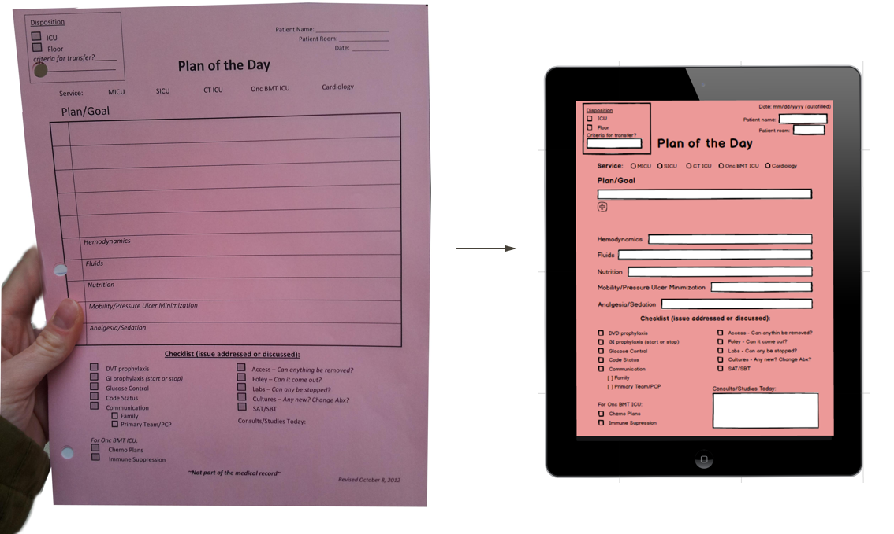
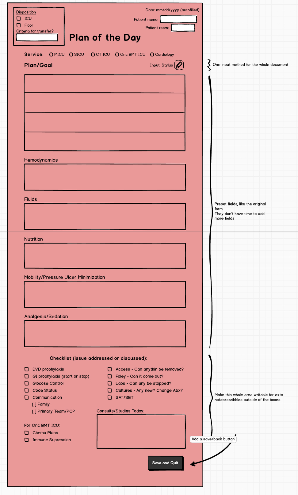

During this project, myself and another grad student designed, developed and tested a prototype which digitized a crucial hospital paper form and made notes available for viewing in real time. The form was referred to as the Plan of the Day and digitizing it had the potential to make the ICU team’s daily process easier and more efficient.
I was the lead designer on this project, supported by another design and engineering student. I was responsible for the UI and visual design deliverables as well as writing most of the CSS for the functional prototype. We collaborated on gathering data during our user observations, survey design and results analysis, as well as writing the paper that documented our findings.
Doing rounds at an Intensive Care Unit (ICU) is a process that requires the practitioners to absorb and retain a large amount of information in a short amount of time. We had a unique opportunity to follow an ICU team at the University of Washington Medical Center while they were performing their daily rounds, in order to see if we could identify a problem or process that we could help improve through a well-design technology solution..
During this contextual inquiry, we observed how a large amount of information was exchanged verbally between team members, and captured on a pink slip of paper for each patient. This was a task that was very consistent between patients, and outlined the status and near term next steps of the patient’s treatment, which was referred to as the Plan of the Day. One thing that stood out was the way things were repeated verbally many times to confirm that all the right information had been captured. This seemed like it could be made more efficient, if the other members of the team could see the notes that were being taken and only comment if pieces of information were missing.
We also had a chance to do some short interviews with the doctor and nurse practitioner during which it became clear that being able to store these plans digitally would be a big advantage, as you would then be able to go back and view previous entries or changes in status quite easily.
We aimed to design and test a concept that would:
For the first iteration we designed and built a functional prototype of a form that mirrored the paper version, with the exception that you could create new text fields as needed for additional notes. The radical difference between the analog version and our digital prototype was the fact that the app would show updates in real time on other tables. So one person could be writing on one tablet, and another could watch the notes appear on her own device. This was meant to help with the first goal of making it easy for all practitioners to stay current on the decisions being made.
 The paper form became a tablet app, that broadcasted notes as they were written to other team membersWe tested out the prototype with the same ICU team a few days later. Testing this prototype in the real environment of our users proved to be key; it would be hard to simulate the tasks, constant movement and the rapid pace of an ICU in any other environment. We used an iPad, a Nexus tablet, and a Microsoft Surface for the tests. The Surface was by far the easiest to make notes with, but the others worked well for observing the notes in real time.
Some things worked better than others. Selecting checkboxes on the list was really easy, but using a digital stylus to write proved inferior to traditional pen and paper, and the way that fields needed to be added was perceived as cumbersome. Not being able to write outside the form fields was also viewed as a deal breaking limitation. Based on this feedback, we created a second version of the design, that addressed these issues. Unfortunately, we never had the time to test these changes.
 A refined version based on feedback and observations from the user testsIn general the response and feedback we got from the ICU team was very positive. Most members expressed a genuine interest in the idea and prototype both before and after the test. Although this very first iteration was not quite enough to achieve the goal of making rounds more efficient, it did have some effect as to keeping practitioners more current during the rounds, and with small refinements could easily be made to simplify digital data entry.
At the end of the project, 100% of the participants answered positively to the question “Would you consider using a similar system if it was refined?” showing clearly that there was a great deal of enthusiasm around the project.